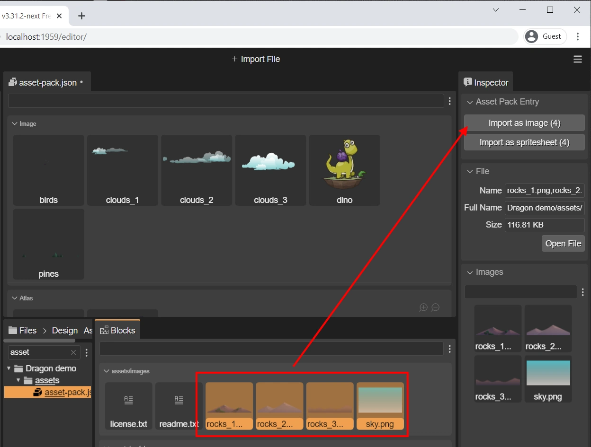
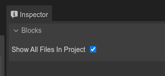

Importing from the Blocks view
The Blocks view is a general-purpose view that connects with the active editor and provides the “blocks” needed to build the objects of the editor.
When the Asset Pack Editor is active, the Blocks view shows the files that are candidates to be imported. A file is a candidate to be imported if:
The file belongs to the folder, or sub-folder, of the Asset Pack file that is the input of the editor (unless you disable this restriction, as discussed at the end of this section).
The file is not present in any other Asset Pack file in the project.
If the file has a content type or file name extension that we know is never loaded in games:
TypeScript files (
.ts).Scene Editor files (
.scene).Another Asset Pack file.
These are the steps:
Select the files to be imported in the Blocks view.
Select one of the importing options listed in the Asset Pack Entry section of the Inspector view.

When the files are imported, edit the new configurations in the Inspector view.
This is simpler than using the Main toolbar button: once you select the files the editor shows only the relevant importing options, based on their content type and name.
Showing all files in the Blocks view
As we mentioned before, the Blocks view only shows the files in the same folder (or sub-folder) as the Asset Pack file. You can disable this restriction by checking the Show All Files in Project settings in the Inspector view:
